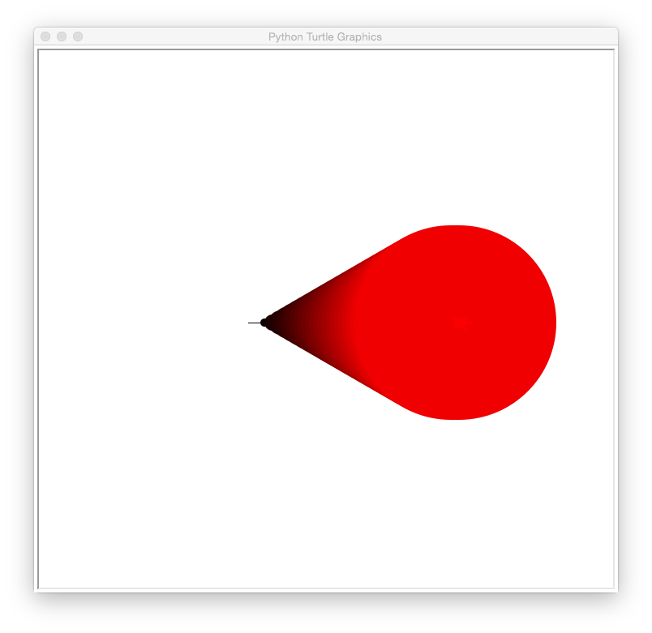
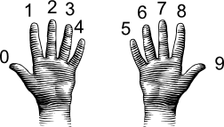
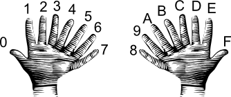
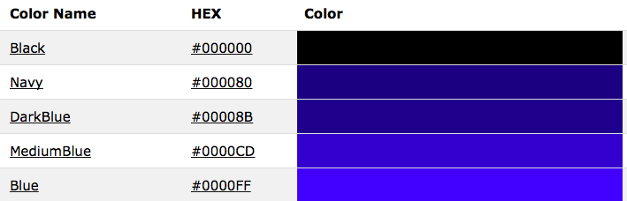
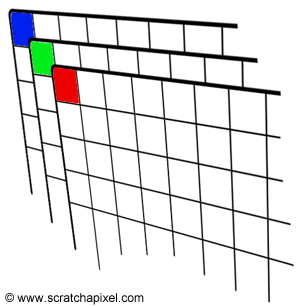

Today's lab will focus on image files and colors
in Python and Unix commands for copying and renaming files.
Software tools needed: terminal (command line), web browser and Python IDLE programming
environment.
Using Python, Gradescope, and Blackboard
See the introductory lab for details on using Python, Gradescope, and Blackboard.
Colors
There are several different ways to specify colors. We will use colors:
- by name,
- by percentage,
- by absolute amount of color (`255' mode), and
- by absolute amount of color (hexadecimal format).
Names for Colors
For common colors, you can give the name of the color, as a string. For example, run the program (click the triangle) to see two turtles, drawing in different colors:
There are more than 100 colors that we can use by name. Here are the ones available in most web browsers and Python turtle packages:
Some are obvious, like ("red" or "blue"), others are a bit more obscure (like
"mediumorchid" or "chartreuse"). What color is "mediumorchid"? Change the color of one of the turtles in the coding window above to find out. Add in a new turtle and make it your favorite color. Draw a few lines to demonstrate its color.
Colors by Decimals
As we saw above, the turtle package recognizes many common colors by name. If your favorite color is not on that list, you can make a new color by specifying how much of the red, green, and blue ('RGB') light intensity you would like. The range for each is from 0 (no light) to 255 (100% light). For example, if all the light intensities are 255 (100% of the possible), then the color is white.
Read the code below and guess what color each turtle is. Check your guess by running the program:
Let's look at some of the shades of red that are available. Here's our plan (or pseudocode):
- Create a turtle, tess.
- For 10, 20, 30, ..., 250,
- Move forward 10 steps
- Make the turtle a bit larger each time
- Make the turtle a bit more red each time
Let's change each piece of our "To Do" list into Python code:
- Create a turtle, tess.
We've done this before. We import the turtle module and set up the turtle. One new thing we need to do, is to tell the turtle library that we would like to represent colors as decimal numbers:
#A program that demonstrates the shades of red
#Fall 2017
import turtle #Import the turtle drawing package
turtle.colormode(255) #Allows colors to be given as 0...255
tess = turtle.Turtle() #Create a turtle
To keep our drawing from running off the screen, we'll move tess backwards before we start our loop:
tess.backward(100) #Move her backwards, to give more space to draw
- For 10, 20, 30, ..., 250,
This can be done with a for-loop and a range that starts at 10, stops at 255, and steps up by 10 each time:
for i in range(0,255,10):
- Move forward 10 steps
tess.forward(10) #Move forward
- Make the turtle a bit larger each time
tess.pensize(i) #Set the drawing size to be i (larger each time)
- Make the turtle a bit more red each time
tess.color(i,0,0) #Set the red channel to be i (brighter each time)
Here's the whole program altogether. Copy it over to an idle file window and try running it:
#A program that demonstrates the shades of red
#Fall 2017
import turtle #Import the turtle drawing package
turtle.colormode(255) #Allows colors to be given as 0...255
tess = turtle.Turtle() #Create a turtle
tess.shape("turtle") #Make it turtle shaped
tess.backward(100) #Move her backwards, to give more space to draw
#For 0,10,20,...,250
for i in range(0,255,10):
tess.forward(10) #Move forward
tess.pensize(i) #Set the drawing size to be i (larger each time)
tess.color(i,0,0) #Set the red channel to be i (brighter each time)
The resulting graphics window is:

How would you show shades of blue? When you have figured out the answer, see the Programming Problem List.
Colors by Hexadecimal
A common way to represent colors is using hexadecimal numbers. Our traditional decimal, or base-10 numbers, use 10 symbols for each digit: 0, 1, 2, 3, ..., 9. Hexadecimal, or base-16 numbers, use 16 symbols. In addition to 0, 1, 2, ..., 9, the letters A, B, C, D, E, and F are also used.
A good way to think about it is to think about what the world would be like if everyone had 8 fingers on each hand, instead of 5. When we count, on 10 fingers, we can use the symbols 0, 1, 2, ..., 9 to label each finger:

(from i-programmer.info)
Doing the same for 16 fingers, we use 0, 1, 2, ..., 9, and then A, B, ..., E when we run out of the normal symbols for numbers:

(from i-programmer.info)
The first 9 numbers are the same in both decimal and hexadecimal, but larger numbers are different. For example, counting to 10 on our 8-fingered hands gives the symbol A. So, the decimal number 10 is the single digit hexadecimal number, A.
Going in the other direction, the hexadecimal number 11, is counting through all the (8-fingered hands) fingers (16) plus one more, yielding 17.
Why does this matter? Our color values range in decimal from 0 to 255. If we write these in hexadecimal, the range is 0 to FF. FF is the largest two-digit hexadecimal number, so, this range of values fits perfectly in two-digit hexadecimal numbers. Triples of these hexadecimal values are an extremely common way to represent colors.
For example, here are some shades of blue, given with their name and hexadecimal value:

The leading hash sign ('#') is used to indicate that this is a hexadecimal number:
- The next two digits are for the amount of red.
- The middle two digits are for the amount of green.
- The last two digits are for the amount of blue.
The first color on the list has 00 or 0% red, 00 or 0% green, and 00 or 0% red, and represents the color black. These shades of blue all have no red (first two digits are 00) and no green (middle two digits are 00). By varying the values of the last two digits, we have a dark, navy blue (80 in the last two digits) to a bright blue (FF in the last two digits).
We can set the color of turtles using hexcodes. For example, to create a turtle, named thea, and set her color to the medium blue (using the hex code from the above list), we can:
import turtle
thea = turtle.Turtle()
thea.shape("turtle")
thea.color("#0000CD")
producing a graphics window with:
The code above always produces a medium blue turtle. How would you modify the program to let the user specify a hex code for the color of the turtle?
When you have figured out the answer, see the Programming Problem List.
Images
There are many different formats to store images. Some store the information about the color of every
pixel ("picture element" or dot on the screen). Others store end points of lines or boundaries of regions and the colors of each. We focus on the former, and in particular, use the
png (portable network graphics) file format, which is popular for storing images captured from cameras and is `lossless' (every pixel captured is stored, so, can also be quite large).
The textbook has a lovely visualization and explanation:

To specify a given pixel, you give its row, r, and column, c, in the grid. Counting from the upper left hand corner which has index 0,0. This is unlike standard Cartesian (math) coordinates but echos how
matrices are often accessed.

Each pixel is represented by its the percentage of red, green, and blue ("RGB") values. Images are stored as a grid of red values, a grid of green values, and a grid of blue
values.
For example, if we stored our image in the variable, img, we could access the red
value by:
print "Upper left has red:", img[0,0,0]
and the amount of green:
print "Upper left has green:", img[0,0,1]
and the amount of blue:
print "Upper left has blue:", img[0,0,2]
Any point can be accessed via its coordinates
(i,j) and the color channel (0 for red, 1 for green, and 2 for blue). In our example above,
with the picture stored in the variable,
img:
img[r,c,chan]
where the
r is the row and
c is the column of the pixel and
chan is the color channel (0 for red, 1 for green, and 2 for blue). Note that when we are accessing parts of our images, we use the square brackets ('[' and ']'), just as we did for lists. The round parenthesis ('(' and ')') are used for functions (like
print() and
right()).
Let's write a program that manipulates an image. Read through the code first, and then try on your computer. What does it do? Note: this program assumes that you have a file called csBridge.png in the same directory. You can use that file, or substitute one of your own.
#Name: CSci 127 Teaching Staff
#Date: Fall 2017
#This program loads an image, displays it, and then creates, displays,
# and saves a new image that has only the red channel displayed.
#Import the packages for images and arrays:
import matplotlib.pyplot as plt
import numpy as np
img = plt.imread('csBridge.png') #Read in image from csBridge.png
plt.imshow(img) #Load image into pyplot
plt.show() #Show the image (waits until closed to continue)
img2 = img.copy() #make a copy of our image
img2[:,:,1] = 0 #Set the green channel to 0
img2[:,:,2] = 0 #Set the blue channel to 0
plt.imshow(img2) #Load our new image into pyplot
plt.show() #Show the image (waits until closed to continue)
plt.imsave('reds.png', img2) #Save the image we created to the file: reds.png
The code above always produces an image with only the red channel displayed. How would you modify the program to display only the blue channel?
When you have figured out the answer, see the Programming Problem List.
More on Files & Command Line Interface
Last lab, we introduced the Unix shell commands:
- cd: change directories (or folders),
- mkdir: make a directory,
- ls: list the contents of a directory, and
- pwd: show the path (location) of the current working directory.
The ls command has many options to give more information about what is in a folder. For example,
$ ls -l
is the "long" format of
ls and gives additional information such as permissions (who is allowed to
read,
write, or e
xecute the file), the owner and owner's group, the size, and the date of creation. For example, if our folder had a single directory,
thomasH (like we created in
Lab 2), when you type the command, you will see output similar to:
$ ls -l
drwxr-xr-x 2 stjohn wheel 68 Jan 7 21:00 thomasH/
Two useful commands are cp and mv which copy and rename (move) files. If we have a folder with:
$ ls
p1.py p2.py programs/
We can make a copy of a file by using the
cp and the name of the old file and the new file:
$ cp p2.py p3.py
The result would be:
$ ls
p1.py p2.py p3.py programs/
Renaming a file follows the same format:
$ mv p1.py prog1.py
The result would be:
$ ls
p2.py p3.py prog1.py programs/
You can also move programs into a folder by giving the directory's name as the last input to the
mv command:
$ mv p3.py programs
The result would be:
$ ls
p2.py p3.py programs/
If we look inside the
programs folder, we see:
$ ls programs
prog1.py
What's Next?
If you finish the lab early, now is a great time to get a head start on the programming problems due early next week. There's instructors to help you, and you already have Python up and running. The Programming Problem List has problem descriptions, suggested reading, and due dates next to each problem.
Using Python on Your Computer
Today's lab introduced several packages that are freely available but do not always come bundled with Python. If you are using anaconda at home, then most are included. See the directions below for other installations. (To install Python at home, see Lab 1 for directions.)
If you have a Linux machine and would like to match the environment on the lab machines, at a terminal window, type the following commands:
sudo apt-get update
sudo apt-get -y upgrade
sudo apt-get install python3 python3-pip idle3
pip3 install numpy pandas folium image matplotlib scipy
sudo apt-get install spyder3
Unix Shell on Your Computer
If you are working at home, here's directions for accessing a Unix shell environment:
- Linux machines: This is what we have in the labs. You can launch a terminal by clicking on the icon for a terminal (or using the search feature to find it).
- Macintosh (OSX) machines: The OSX operating system, run by modern mac computers, is based on Unix (albeit a slightly different one than Linux). You can bring up a terminal window by using Spotlight or search for "terminal".
- Windows machines: The underlying terminal uses commands that are differnt from Unix (they're based on the Microsoft Disk Operating System, or MS-DOS). There are several on-line emulators of Unix that you can use via the browser, such as: tutorialspoint online terminal.
- Phones/Tablets: Since most do not run Unix (or allow access to a terminal), the best is to use a web-based terminal emulator above.
Note that the on-line terminals are very generic and do not have Python 3 or IDLE as part of the emulation. If you would like to run Python on your phone or tablet, a simple option is to use PythonTutor or for turtle programs,
Trinket.
{kind=link}